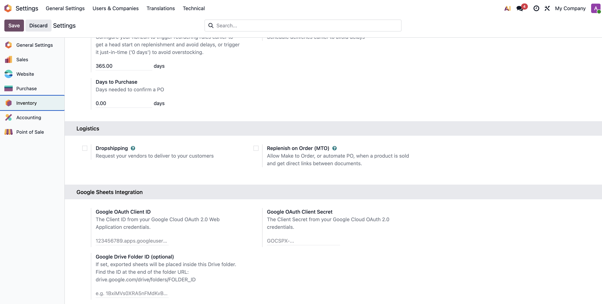
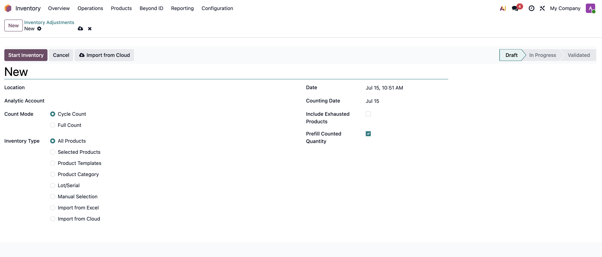
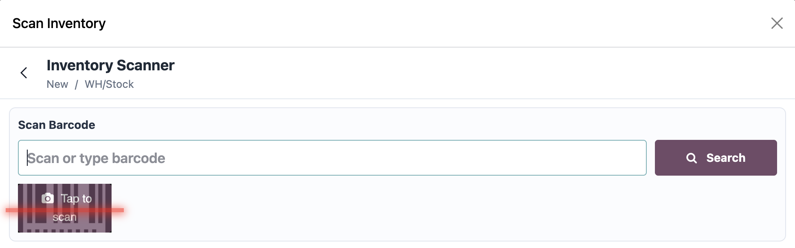
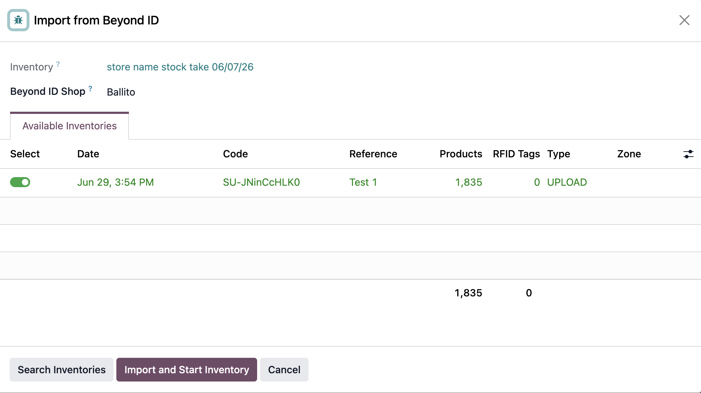
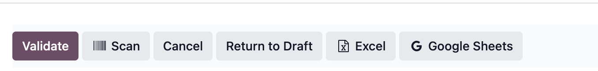

Stock Inventory Adjustment User Manual
Perform stock counts (cycle or full) against Odoo's theoretical quantities, count via manual entry, a dedicated barcode scanner, Excel/CSV import, or Beyond ID RFID cloud import, then post the results as accountable stock moves and export them to PDF, Excel, or a live Google Sheet.
1. Introduction
This module gives warehouse and retail staff a controlled workflow for recording counted quantities against theoretical stock, reviewing the resulting shortages and surpluses, and posting them as real stock moves tagged to an analytic account — with a full audit trail of every scan, barcode lookup, and missed item along the way.
Main purpose
Replace ad-hoc stocktaking with a single record per count that tracks scope, counting method, every individual scan event, and the final adjustment it produces — so a count can always be reconstructed and audited after the fact.
Operational flow
Draft (define scope) → In Progress (count via manual entry, scanner, Excel import, or Beyond ID cloud import) → Validate (creates stock moves for every line with a difference) → Validated. Only draft inventories can be freely reconfigured; validated inventories are permanently locked.
2. Dependencies
These are installed and enabled automatically by Odoo's module system when this module is installed — nothing here needs manual setup, except where noted.
| Dependency | Type | Required? | Purpose |
|---|---|---|---|
stock |
Odoo app | Required | Core inventory/warehouse data model — locations, quants, and stock moves this module counts against and posts to. |
stock_account |
Odoo app | Required | Accounting valuation layer needed so validated stock moves produce the account move lines this module tags with an analytic account. |
barcodes |
Odoo app | Required | Provides the barcode scanning service the Scan screen and global barcode listener hook into. |
retailit_beyondid_manager |
Odoo app (Retail IT custom) | Required to install | Supplies the Beyond ID (AdvanCloud/Keonn) API client. The module cannot be installed without it, but you only need to actually use it if you do does Cloud Import from Beyond ID — see that module's manual for connecting an account. |
openpyxl |
Python package | Required | Reads uploaded Excel workbooks for the Excel/CSV import feature. |
xlsxwriter |
Python package | Required | Builds the Excel export workbook. |
| Google Cloud OAuth credentials | External service | Optional | Only needed if you want the Google Sheets export button to work. PDF and Excel export, counting, scanning, and every other feature in this module work fully without it. |
3. Configuration
Open Inventory → Configuration → Settings and scroll to the
Google Sheets Integration block.

| Field | Purpose |
|---|---|
Google OAuth Client ID |
The Client ID from a Google Cloud OAuth 2.0 Web Application credential. Required before any user can export to Google Sheets. |
Google OAuth Client Secret |
The matching Client Secret for the same OAuth credential. |
Google Drive Folder ID (optional) |
If set, every exported spreadsheet is moved into this Drive folder instead of
landing in the exporting user's personal Drive root. Taken from the end of the folder's
URL: drive.google.com/drive/folders/<FOLDER_ID>. |
Example configuration
You paste the Client ID and Client Secret generated in Google Cloud Console (see Section 4) into the two OAuth fields, then optionally set a shared Drive Folder ID so every inventory export from any user ends up in one place your team can find, rather than scattered across each exporter's own Drive.
Access Groups
Access is controlled by a dedicated Inventory Adjustments privilege (Supply Chain category) with two groups.
| Group | Access |
|---|---|
| User | Read-only on inventories, lines, missing barcodes, missed items, and scan logs. Full create/read/write/delete on the cloud import wizard itself, since it's a transient working screen rather than stored inventory data. |
| Manager | Full create/read/write/delete on everything the User group can see, including inventories, lines, missing barcodes, missed items, and scan logs. Implies the User group. |
4. Google Cloud Console Setup (Admin, Optional)
This is a one-time setup performed outside Odoo, in Google Cloud Console, by whoever administers your Google account. It only needs to be done once per Odoo instance.
- In Google Cloud Console, create or select a project dedicated to this integration.
- Enable the Google Sheets API and Google Drive API for that project, under APIs & Services → Library.
- Configure the OAuth consent screen under APIs & Services → OAuth consent screen. Choose "Internal" if you use Google Workspace, or "External" and add each Odoo user's Google account as a test user while the app remains in "Testing" status.
- Create credentials: APIs & Services → Credentials → Create Credentials → OAuth client ID → Application type Web application.
- Add an Authorized redirect URI matching exactly:
{web.base.url}/retailit_stock_inventory_adjustment/google_oauth_callback. Confirm the exact value ofweb.base.urlfirst underSettings → Technical → System Parameters— a mismatch here is the most common cause of a "redirect_uri_mismatch" error from Google. - Copy the generated Client ID and Client Secret into the Odoo settings fields described in Section 3.
- If the consent screen is left in "Testing" status, only the Google accounts explicitly added as test users can authorize the integration — add every user who will export to Sheets, or publish the consent screen.
spreadsheets and drive.file
scopes — it can create and edit spreadsheets, but it cannot read or modify any other file in
the user's Drive. There is no need to grant broader Drive access when configuring the consent
screen.
5. How It Works
Every inventory is built around a Location, a Count Mode (Cycle or
Full), and an Inventory Type that determines how its lines get their initial
scope. Once lines exist, the same fields drive every counting method, the shortage/surplus
computation, and what happens on Validate.
| Field / Data | Source | Rule |
|---|---|---|
theoretical_qty |
stock.quant |
Snapshotted onto each line when it's generated or imported — not live. It only updates again if the line is manually refreshed, or automatically for Full Count inventories whenever their missed items are recalculated. |
difference_qty |
product_qty - theoretical_qty |
Stored computed field. Negative is a shortage, positive is a surplus. |
count_source |
Set by whichever action wrote the line | rfid from Excel/CSV or cloud import, scan from the
barcode scanner, manual the first time a counted quantity is typed
directly into a line, system for Full Count placeholder lines nobody has
counted yet. |
is_counted |
Line write() override |
Automatically set to true the first time Counted Qty is edited on an
in-progress line, unless the write is an internal system update (e.g. refreshing a
missed-item placeholder). |
missed_item_ids |
Full Count refresh | Only ever populated when Count Mode = Full. Lists every storable
product with on-hand stock at the location that no line has counted yet. |
6. Main Workflow
The core lifecycle is the same regardless of which counting method is used to fill in the quantities.

- Create the inventory: set Location (must be an internal location), Analytic Account, Count Mode, and Inventory Type. The Analytic Account can be set now or any time before Validate.
- Click Start Inventory. Depending on Inventory Type this generates lines from current stock quants, imports an uploaded Excel/CSV file, or leaves lines for a cloud import to have already populated. Only one inventory can be In Progress per location at a time.
- Count using any combination of manual entry, the Scan button, or (for draft inventories only) Import from Cloud — see Section 7.
- Click Validate. This requires an Analytic Account, recalculates missed items one last time, and creates a stock move for every line whose Difference is not zero, with the Analytic Account applied at 100% to the resulting accounting lines.
7. Counting Methods
An inventory's lines can be filled in using any mix of the four methods below during the In Progress state (Cloud Import is draft-only).
Manual entry
Edit Counted Qty directly in the Lines tab. The first edit to a line automatically sets its Count Source to Manual and marks it Counted.

Barcode scanner
The Scan header button (visible only while In Progress) opens a dedicated full-screen scanner. Scanning a barcode looks it up first against this inventory's own lines, then against the product master; barcodes matching neither are logged under Missing Barcodes rather than blocking the scan. Entering a quantity and pressing Enter — or using the on-screen numpad or the quick +1/+5/+10/−1/−5/−10 buttons — saves it. Each save locks the specific inventory and line records for that instant, so two devices scanning at once can't overwrite each other's count. Opening the scanner from the header (rather than from a specific barcode) starts continuous-scan mode: after each save the screen resets for the next item, and re-scanning the same barcode that's still on-screen simply bumps the quantity by +1. Scanning a different barcode while one is still unsaved shows a warning instead of switching products, so a count is never left half-entered by accident.
Excel / CSV import
Set Inventory Type to Import from Excel and upload a file with a
code and count column (header matching is case-insensitive) plus an
optional name column used only to label unmatched barcodes. CSV files tolerate a
UTF-8 byte-order mark. Barcodes are normalized so numeric values don't drift into scientific
notation, and duplicate barcodes within the same file are summed rather than overwritten. Every
barcode is matched against product barcodes on Start: matches become lines pre-marked as Counted
with Count Source RFID; non-matches become Missing Barcode records instead of being silently
dropped.

Cloud import (Beyond ID)
Set Inventory Type to Import from Cloud — only available while the inventory is still Draft. Click Import from Cloud, choose the Beyond ID shop, click Search Inventories to list that shop's available RFID counts (most recent first), select exactly one, then Import and Start Inventory. This pulls the stock rows for that count, matches them by barcode using the same logic as the Excel import, and immediately starts the inventory.
8. Edge Cases & Resets
The module enforces a number of guardrails to keep counts and their resulting stock moves consistent:
| Situation | What happens |
|---|---|
| Starting an inventory when another is already In Progress for the same location | Blocked with an explicit error. Only one active count per location at a time. |
| Clicking Validate without an Analytic Account set | Blocked. It can be set at any earlier stage, but must be present before Validate. |
| Cancelling a Validated inventory | Blocked. Validated inventories are permanent; corrections need a new count. |
| Deleting an inventory | Only allowed while still in Draft. |
| Editing an inventory or its lines once Validated or Cancelled | Blocked at the record level, not just hidden in the UI. |
| A scanned or typed barcode over 64 characters, or containing whitespace | Rejected as invalid before it reaches the count. |
| A negative quantity entered in the scanner | Rejected. |
| Full Count: a storable product with on-hand stock at the location that nobody counted | Automatically listed under Missed Items and mirrored into Lines/Shortages as a system-owned line at qty 0 — a full count can't be validated without either counting it or knowingly accepting the resulting shortage. |
| Cycle Count: a product nobody counted | Simply left out of the count. No missed-item shortage is created for it. |
9. States and Reasons
An inventory moves through four states over its lifecycle.
Each line also carries a Count Source, which explains where its quantity came from rather than why it differs:
| Count Source | Meaning | Typical action |
|---|---|---|
rfid |
Populated by an Excel/CSV or Beyond ID cloud import. | Trust as-is unless spot-checking; recount manually if it looks suspect. |
scan |
Entered through the barcode scanner screen. | Check the Scan Logs tab if the quantity looks wrong — every scan and save is recorded there with who, when, and the previous value. |
manual |
Typed directly into the Counted Qty column. | No special action; treat as a deliberate count. |
system |
A Full Count placeholder for a product nobody has counted yet — not a real count. | Count it for real, or knowingly accept it as a shortage before validating. |
10. Reporting & Export
Three export options appear as header buttons once an inventory leaves Draft. PDF and Excel always work; Google Sheets is the one optional path and only works once Sections 3 and 4 above have been configured.

| Option | Details |
|---|---|
| Available from the Print menu. Same layout and grouping as the Excel export. Requires no external configuration. | |
| Excel | Header button. Generates a two-sheet workbook: a main sheet with all lines grouped by location plus dedicated Shortages/Surpluses/Summary sections, and a separate sortable "Variance Report" sheet listing only lines with a difference. Downloads immediately; no Google configuration needed. |
| Google Sheets (Optional) | Header button. The first click by any given user redirects to Google's consent screen using the OAuth client configured in Section 3. Once authorized, a new spreadsheet is created with the same two-sheet structure as the Excel export (color-formatted to match), moved into the configured Drive folder if one is set, and opened in a new tab. |
11. Best Practices
- Match the count mode to the goal: use Full Count for scheduled or annual stocktakes where every discrepancy must be accounted for before it's accepted — the module will refuse to let anything slip through unnoticed. Use Cycle Count for spot checks on a subset of products, where untouched stock should simply be left alone.
- Set the Analytic Account when creating the inventory, not just before validating. Picking it upfront avoids a blocked Validate step after a long count and keeps cost postings consistent across similar counts.
- Review the Shortages and Surpluses tabs before clicking Validate. Validation immediately creates real stock moves — there is no draft or preview state for the adjustment itself, so treat Validate as the point of no return.
- For scanner-based counts, resolve each unsaved product — save or cancel it — before scanning the next barcode rather than rapid-firing scans. Open the scanner from the header button (not from a specific line) to get continuous-scan mode, where repeat scans of the same item simply increment its quantity.
- Before a large Excel/CSV or Beyond ID cloud import, register any new products' barcodes in Odoo first. Unmatched barcodes land in Missing Barcodes rather than blocking the import, but a count full of missing rows isn't telling you much about actual stock accuracy.
- Treat Return to Draft as a hard reset, not a pause. Export a PDF or Excel snapshot first if there's any chance you'll want a record of what was counted before the reset wipes lines, scan logs, and missed items.
- If you use the optional Google Sheets export, don't grant more Drive access than the module requests when configuring the OAuth consent screen. It only ever asks for the Sheets scope and the ability to manage files it creates itself — there's no reason to widen that.
- If Google Sheets export is enabled and the OAuth consent screen is left in "Testing" status, add every user who will export to Sheets as a test user, or their first export attempt will fail at Google's consent screen rather than in Odoo.
- Reserve the Manager group for whoever owns a count's outcome — they can edit and delete draft inventories. Give counting staff the User group so they can view records and act through the scanner and lines without being able to quietly delete an inventory.